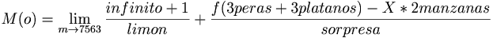

De: La Frikipedia, la enciclopedia extremadamente seria.
De: La Frikipedia, la enciclopedia extremadamente seria. De: La Frikipedia, la enciclopedia extremadamente seria.
| De la serie ciudades del mundo: | |||||
| Ágreda | |||||
| |||||
| Topónimo oficial | Vikingolandia | ||||
| País | Aspaña | ||||
| Código postal | 21050x2 | ||||
| Superficie | mas que Ólvega | ||||
| Altitud | ¿en pies o en pulgadas? | ||||
| Distancia | de donde dices que era la distancia? | ||||
| Fundación | hace la tira por Hércules y el Caco. | ||||
| Población | 3000 y pico | ||||
| Gentilicio | Agredidos | ||||
| Alcalde | un pepero en socialandia. Manda en su casa pero su mujer toma las decisiones | ||||
| | |||||
Ágreda, pueblo castellano-soriano, aragonés, vasco-navarro, que se independizó gracias a que su dios Odín, dios de los vikingos, pactara una tregua con los habitantes del Castejón adoradores de Vaco, y los de la plaza devotos de la virgen de los Milagros. Por esto se le conoce a Ágreda por la villa de las tres inculturas, esta habitado por tres mil y pico (muy importante ese pico) sobre todo si lo pregunta uno de Ólvega. Por decirlo de un modo que cualquier friki lo entienda, Ágreda sería la sexta y Ólvega telainco. en la actualidad, se le supone de Soria, pero su prefijo es el 976, luchan por la autodeterminación de su pueblo, junto al frente popular de Judea, y su líder Brian de Nazaret, no confundir con Jesús de Nazaret
si tu le preguntas a un agredido, que es el gentilicio oficial de los habitantes de Ágreda, donde esta Ágreda, te lanzan una mirada fulminante y te dirán ¡pues joder en Ágreda¡ (imprescindible ese pues que les ayuda a pasar desapercibidos en cualquier parte del mundo) donde nació Fermín Cacho, como si todos nos acordáramos de Barcelona´92, entonces tu le dices naranjito nació en Ágreda? y te dirá que es el pueblo del que desciende Xabi alonso, entonces tu piensas, ¿le han cambiado el nombre a don hostia?, tengo que leer mas los periódicos, entonces dejas de preguntar por miedo a otra respuesta. Dice la leyenda, que un valiente siguió preguntando y estuvo 45 minutos escuchando lo bueno que es el cardo rojo y la difícil que es enterrarlo, también cuenta la leyenda que este hombre se puso morros y ahora se hace llamar "La Veneno".
Nadie sabe donde se sitúa realmente Ágreda, porque cuando lo preguntas, solo te enseñaran a jugar a la abuela, para cuando consigas llegar, se cree que en Ágreda no se comercia con dinero, si no con números de la abuela, pero bueno ya aprenderéis cuando os encontréis con algún agredido en cualquier sitio donde halla vino cerveza, eso si no te habla de incierres, entonces, te lo encontraras en un sitio donde aiga halla vacas.
Llegar a Ágreda es harto difícil, tu vas tranquilamente por una mierda de nacional y de repente salida de la nada aparece una autovía, de esas que dices mierda¡¡ joder como están este año los agujeros de gusano y los saltos en el tiempo¡¡.
De esto saben un rato, que apenas contaminan, de hecho son como los bonsáis, que necesitan tener el medio ambiente súper limpio y cuidado, por eso no tienen ninguna planta de purines que les convierta en mutantes, que al igual que lila nazcan con un solo ojo.
Pero cuidado, que ponen un punto limpio vigilado por el rifle justo al lado y se piensan que son eco, ecoidiotas concretamente.
También tienen una depuradora, Ólvega esta encantada, porque como dicen ellos, los de Agreda se comen su mierda, ahora, que como dicen en Agreda, nuestras bacas son mejores¡¡¡ di que sí invéciles pero orgullosos.
Ágreda solo tiene dos estaciones invierno y la de la RENFE, y en las dos hace mucho frío. Ágreda se caracteriza porque siempre hay nieve, unas veces en la calle, pero siempre siempre en los bares.
Existe una tercera estación, la de utubuses, en esta hay un bar, pero nunca he visto a nadie tomando nada.
Esta ciudad en el comienzo de los tiempos era el lugar de descanso del rey dinosauril penedector, pero murió por intoxicación etílica jugando a la abuela en los pichis (sin duda la mejor peña de este pueblo) y a la que pertenecen los chavales wilfred.
Mas tarde fue conquistada por los vikingos, esta es la verdadera razón del mote, no tiene nada que ver con que todos fueran del real Mandril. Estos valerosos guerreros lucharon contra los celtíberos que no pudieron hacer nada, luego llegó la edad media, y hasta la fecha poco más se ha movido, bueno el instituto si que se ha movido, hacia abajo concretamente.
Fuente: Jaime gatillazo, sexólogo e historiador
Ágreda es la capital de un basto imperio, que cuenta con importantes poblaciones, como son Valverde, aldehuela y fuentes, esta última habitada únicamente por dos hermanos que no se hablan, pero en verano abren el bar y los cubalibres están a un leuro con 80. la raza agredida (en la actualidad esta raza son unos mutantes gracias a vertidos de purines en el agua y el aire) se caracteriza por que los hombres de allí, no tienen cuello, son cabezones, bajitos y especialmente se caracterizan por tener todos la misma calva, entradas y coronilla, cosa segunda que se ha tomado muy en serio el macareno, también se caracterizan por tener el mismo corte de pelo, cosa que es de agradecer al Javi el peluquero, barbero de los que ya no quedan, que cuando éramos niños nos daba sugus, y al que los niños le debemos agradecer que dejara las pornos a la vista en la repisa de la ventana ¡¡GRACIAS¡¡. Tu pones una fila de 2000 personas y 20 de Agreda de espaldas y por el cuello y la calva sabes quienes son. en la actualidad unos nuevos pobladores están colonizando el barrio moro, esta raza tan curiosa se caracteriza por ser morenitos y hablar en un extraño lenguaje, sus mujeres llevan burka, al principio se pensó que eran moros, mas tarde se desechó, porque se supone que los moros no pueden beber, y bueno estos... beber beben y no poco. Irónicamente la población que cuenta con más agredidos es zárágózá.
Dentro del propio pueblo de Agreda, se organizan por barrios, el moro, que cuenta con alcalde propio, la costoya, donde están los cristianos viejos, la peña y las casa baratas, este último mas modernito.
Los administradores de este pueblo son unos tipos súper eficientes, personas altruistas, que en ningún caso buscan un interés propio, una mierda por cerebro es la explicación mas lógica para entender que tras cascarse la faraónica obra de la circuncisión-autovía hallan cambiado el curso de las aguas de todos los alrededores para canalizarlas hacia el pueblo, lo que hace que a nada que llueva se inunde todo, por no hablar de su propia obra del pilar, que son las climatizadas, un edificio que se inaugurara y jubilara el mismo día, según cálculos del INE y antes de inaugurarlo según el FMI.
En las elecciones del 2011 es casi imposible decir quien ganó, puesto que el que se presentaba por el PSOE había intentado entrar en el PP pero no le dejaron, y el del PP, era socialista, y lo eligieron después deque el del PSOE les dijera que no, pero hay dos PP, uno del pardo, y otro de la catalana y los kikos, también hay un IDES.
El cardo rojo D.O. de agreda® , cardo en ensalada, cardo con almendras, cardo para cenar, comer , merendar, tarta de cardo, albóndigas de cardo, tortilla de cardo, pacharán de cardo….
Y algún producto de la tierra más.
Sin olvidarme del cardo, en ensalada, cardo con almendras, cardo para cenar, comer , merendar, tarta de cardo, albóndigas de cardo, tortilla de cardo, pacharán de cardo
En greda hay cardo para dar, para tomar, Para los gordos. Para los flacos. Para los altos. Para los bajos. Para los que ríen. Para los optimistas. Para los pesimistas. Para los que juegan. Para las familias. Para los reyes. Para los magos. Para los responsables. Para los comprometidos. Para los náufragos. Para los de allí. Para los que trabajan. Para los de aquí. Para los románticos. Para los que te quieren. Para los que no te quieren. Para los que te quieren mucho. Para los que te quieren poco. Para los bronceados. Para los nudistas. Para los supersticiosos. Para los originales. Para los calculadores. Para los sencillos. Para los que leen. Para los que escriben. Para los astronautas. Para los payasos. Para los que viven solos. Para los que viven juntos. Para los que se enrollan. Para los que besan. Para los primeros. Para los últimos. Para los hombres. Para los precavidos. Para ella. Para los músicos. Para los transparentes. Para los que disfrutan. Para los fuertes. Para los que se superan. Para los que participan. Para los que viven. Para los que suman. Para los que no se callan. Para nosotros. Para todos. Y todavía les sobran
china es el único país que no puede invertir en Ágreda, puesto que es el único sitio en el que no solo no se han expandido los negocios chinos, si no que el único todo a cien chino que había tuvo que cerrar, una lastima que no se llevaran al Gallico con ellos, con la de niñas chinas que se adoptan en España que menos.
Pretenden mejorar su economía mediante factorías, para eso hacen polígonos industriales, estos son como los pregones que Ólvega les da mil vueltas, no saben que si cambias una carretera de sitio los postes eléctricos que quedan en medio del nuevo trazado hay que quitarlos, tampoco saben que la finalidad de estos polígonos es llevar cuantas más empresas mejor, no llevar una y que se llene, o que no quepa porque es pequeño.
FORMULA EMPLEADA PARA CONTABILIZAR LOS CHICLÉS POR SABORES:

Rola demoliciones SA. Mas conocido como el pocero, se ha propuesto llenar todo el margen del río de chalets piscinas adosadas a ver si la gente deja de ir definitivamente a la dehesa para comprarla.
De alojamiento en Agreda no entienden mucho, (tienen un camping pero la convivencia con los zombies asesinos que lo habitan se hace difícil cuado intentan comerse tu cerebro) por eso es mejor preguntar en Ólvega, que de pisos vacíos y hoteles desiertos entienden un montanazo, además tienen una gama muy variada en la sección de bebidas espirituales, preguntad por el coctel exorcismo.
La Tortilla, el cardo, cardo en ensalada, cardo con almendras, cardo para cenar, comer , merendar, tarta de cardo, albóndigas de cardo, tortilla de cardo, pacharán de cardo….
en Ágreda comen langartos lagartos, con reyeno de sardina y/o chorizo. Lo mejor es cuando les arrancas la cola
De esto van bien surtidos:
hace unos años trajeron al papa para la coronación de la virgen, y dijo estas sabias palabras:
-quedan inaugurados los juegos olímpicos
-pero santidad que tiene que dar una misa en honor a la virgen
-a bueno, yo como los he visto a todos con chándal...
Después la gente almuerza, luego a las vaquillas, a casa a cambiarte pa ir al vermú, a comer, siesta de media hora y a la plaza de toros, luego otro incierre, cenar, verbena, bares, otro incierre, y así durante una semana. Bueno un día se cansan y no hay vacas en la plaza, ese día está permitido dormir un poco mas, pero no mucho, que hay que ir a las jotas, y luego en vez de a la plaza de toros, a la mayor para comer unas alubias y ternera, (otra copia cutre del pueblo vecino), después una batukada, o una charanga y a beber lo que no has bebido durante el resto el año, y otro incierre, y empieza la rutina.
El viernes son los zarrones, y cuatro se visten de pastores con cencerros a la espalda, la gente se emborracha a ritmo de gaita.
Sábado la peña se disfraza con disfraces súper currados, que se nota que no los han comprado a ultima hora.
El domingo se quema la sardina, pero no pueden faltar petardos en su interior
Las fiestas de los barrios:
Y las que se inventa la taberna deportiva todos los fines de semana que no cansan pero nada de nada.
¿Ocio? Creo que os equivocáis de pueblo
bueno... me hacen rectificar, muy pero que muy de vez en cuando los jovenes montan alguna actividad, anda que... para una vez que montan... algo..
curiosamente todo acaba en ada:
| ..........................charlotada |
| .......................macarronada |
| ............................ranchada |
| ..............................andada |
| en fiestas traen una:...batucada |
| el dia del socio tocó:...Arégrada |

|
-mira, ves las hormigas en la picota del Moncayo?
-pues no, ¿tu si? -yo tampoco, pero oigo sus pisadas |

|
|
|
Un día cuando era niño la madre del tio angelón, niño angelon todabía, le mandó que le llevara el rancho a su padre que estaba segando en el campo. por el camino el angelito se iba comiendo las costillas y las patatas, cuando llegó su padre le dijo:
- pero Ángel, si aqui no hay nada a lo que el niño respondió: -esque el caballo ha pillado un bache, se ha bolcado la cazuela, se ha caido al suelo y lo unico que he podido recoger ha sido el caldo. |
|
El conjunto agredido juega en el estadio FIFA de la Arquilla, un terreno de algo más de una hectárea arrebatado a las bastas extensiones del Dios Cardo Rojo de Ágreda y también a la Caracola de los Ojillos, que de vez en cuando se cabrea e inunda el terreno convirtiéndolo en un cenagal. De vez en cuando la milicia de los topillos reclama también este territorio en disputa. El macroestadio tiene capacidad para 3000 y pico personas (muy importante ese Pico), y cuenta con una aguerrida hinchada barrena que se juntan en torno al bar/taquilla/palco/oficina del club. Desde ahí hacen de la Arquilla una caldera, a punto de reventar (de hecho a veces revienta, pero esto es más por la culpa de la Caracola, y no por el hecho de estar construído en terreno inundable y con unos materiales de primerísima calidad).
Todo el complejo es fantásticamente dirigido por TRABAJADORes municipales, encargados de finalizar prematuramente las ligas, abrir puntualmente las instalaciones y dar toda la información a cerca de competiciones provinciales<s>.</s>
Como curiosidad, decir que los vecinos Zampaos, a pesar de contar con la OL-30 autovía de entrada a la ciudad, el Hotel Revilla's, el Corte Inglés, y otras muchas infraestructuras, deben estar construyendo una Caja Mágica o un macro pabellón, por lo que sus equipos tienen que acudir a la capital comarcal para disputar sus partidos.
... en Ágreda comen cardos?
... en Ágreda la iglesia es tan alta porque no sabían parar la hormigonera?
... en Ágreda no hay cuestas arriba, que todas son cuestas abajo?
... tanto en la Alemania Nazi como en san Miguel, los encierros son en la judería?
... en la gasolinera venden de todo menos residencias de ancianos?, no espera que de eso también venden
... el cura se cepillo a una en la escombrera fue una vez a cepillar su coche a la escombrera? (en que estaría yo pensando)
... se desayuna chorizo con cola Cao?
... el conde Drácula en Ágreda conduce el tractor con la sembradora para sembrar el paníco?
... en Ágreda son tan de derechas que tienen al zapatero colgado en la iglesia?
«-¿abril? (inclinando la cabeza a la derecha) -¡¡cerral!! (inclinando la cabeza a la izquierda)»
~ un barrena jugando al pasword
«-¿¡ que vida?! ¿¡ande vas tontolaba?!
(todo ello con las pertinentes palmadas hostiones en la espalda muestra de afecto y amistad)»
~ un agredido en la calle
«(onomatopellas) ¡pom pom! -!!que va el buey¡¡ (siempre que dicen esto sale el espinete por la puerta)»
~ cualquier pastor en los corrales del puente caña
«-¿de donde vienes? -¡de las vacas! -¿y a donde vas? -¡a las vacas!»
~ dos agredidos en las fiestas
« me casé con un cabrero pensando en aventajar, se me murieron las cabaras y me quedó el animal»
~ una mujer cantando su pena
Autor(es):